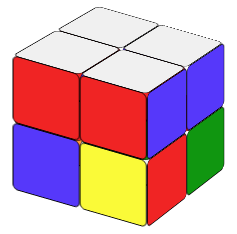
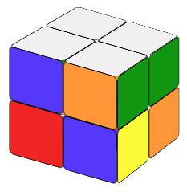
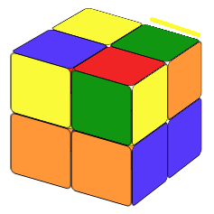
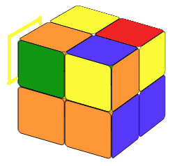
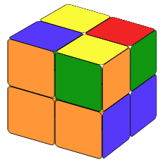
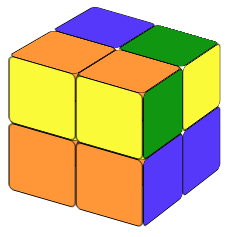
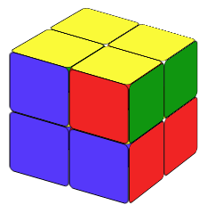
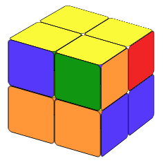

The original Rubik's Cube is a 3x3 cube. So I think that you either already know how to solve a 3x3 cube
or you will learn how to solve a 3x3 cube, but you start here thinking that a 2x2 cube is easier.
If you already know how to solve a classic 3x3 Rubik's Cube, then you will also know how to solve a 2x2 if you realize that
A 2x2 cube is a 3x3 cube with only corners!
If you do not know how to solve a 3x3 cube, I suggest you start from there. However, if you just want to know how to solve a 2x2 cube and do not care about the 3x3 cube, follow the steps below and you will be able to solve it in no time.



Our first step is to make the white layer, but not only that. We also have to make sure that the colors on the sides are correct. We do not need any formula for this step. Just practice and you will find the way.
Now we rotate the cube 180 degrees so that the white layer is at the bottom.
We call these situations fish patterns (name adapted from similar situations in the 3x3 cube).
In this case, on the upper layer, there is one yellow color, and the other three colors are not right.
Let's turn the cube left or right so that the yellow color is on a back-right or back-left position and make sure that
there is a yellow color on the back-layer.
If the yellow color on the upper layer is on the left corner we call it a counterclockwise fish pattern.
If the yellow color on the upper layer is on the right corner we call it clockwise fish pattern.



For the counter-clockwise fish pattern, we can solve it by using formula:
In this case, we will still use the two formulas above, but we need to use them more than once. If there are two cubies whose colors are not right, we turn the cube so that the color at the back of the left-back corner cubie is yellow; if there are four cubies whose colors are not right, we turn the cube so that the color at the left of the left-back corner cubie is yellow. After placing the cube in a correct initial condition, we apply the counter-clockwise fish formula, then the cube will show one of the fish patterns as discribed in (a).
From the formula above, we see that to solve the counterclockwise fish situation, the upper layer is always turning counterclockwise. That's why we call it counter-clockwise fish. Likewise,to solve the clockwish fish situation, the upper layer is always turning clockwise.
Here we have two cases:


In this case (Fig. 5a), we need to place the side whose two corner pieces have the same color on the right side and make the yellow layer the front layer (the one facing us) then we apply the following formula: R2D2.
In this situation (Fig. 3b), it does not matter which side is on the right, but we still need to rotate the cube so the yellow layer is the front layer. . We then apply the same R2D2 formula, we will be able to find a side whose two corner pieces are the same color.
R2D2That's it. You have solve the 2x2 Rubik's cube. Have fun!